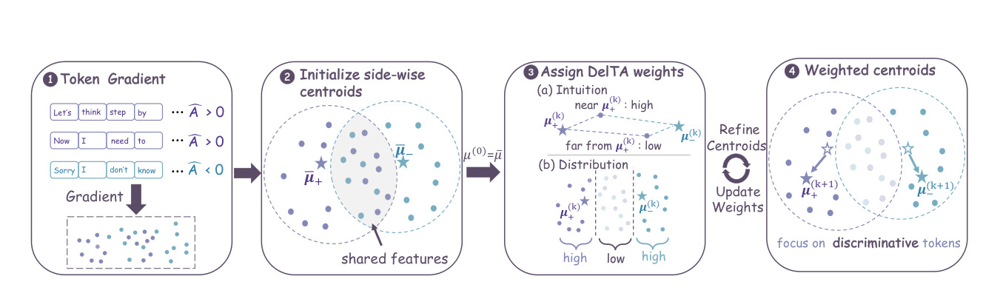
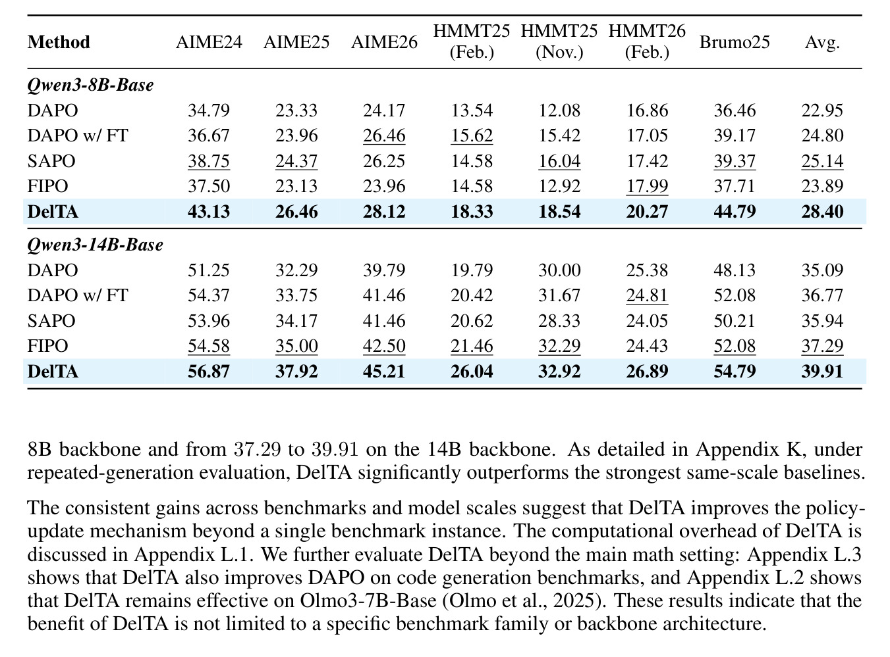
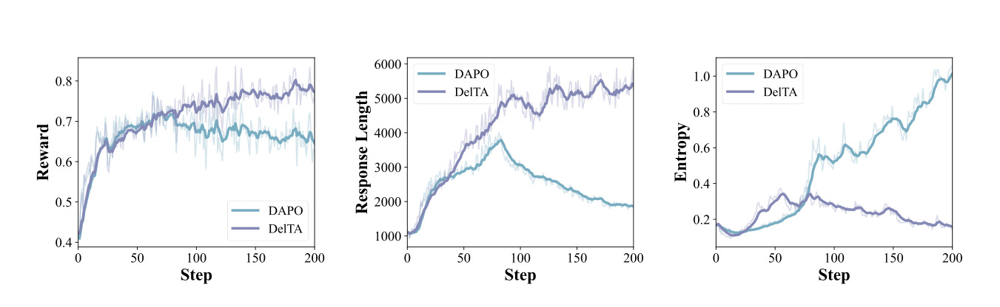
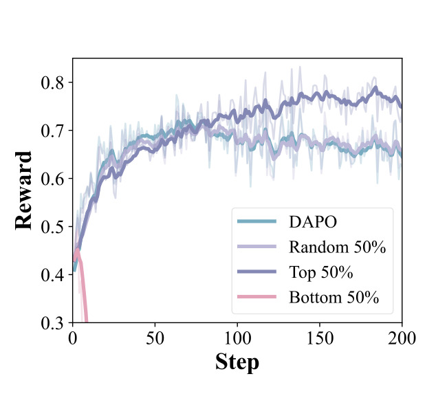

DelTA：Discriminative Token Credit Assignment for Reinforcement Learning from Verifiable Rewards
这里精读一篇 2026-05-20 提交到 arXiv 的论文《DelTA: Discriminative Token Credit Assignment for Reinforcement Learning from Verifiable Rewards》。中文可以叫《面向可验证奖励强化学习的判别式 Token 信用分配》。
论文链接：arXiv:2605.21467
作者：Kaiyi Zhang, Wei Wu, Yankai Lin
机构/团队：Renmin University of China / Ant International。
公开日期：2026-05-20，来源：arXiv cs.LG / cs.CL，arXiv ID：2605.21467。
代码/项目页：已核验 GitHub 仓库 RUCBM/DelTA。
0. 导读
DelTA 讨论的是 RLVR 训练中非常核心但经常被粗粒度处理的问题：序列级可验证奖励如何变成 token 级概率更新。数学、代码和科学问答这类任务通常只在最终答案上给 reward，回答对就是 1，错就是 0。GRPO、DAPO 等方法能利用这种信号提升推理能力，但响应级 reward 会被分摊到整段输出，哪些 token 真正区分高奖励和低奖励响应并不清楚。很多高频格式 token、模板词和共享推理片段会主导梯度，稀疏但关键的判别 token 反而被稀释。
DelTA 提出一个 discriminator view：策略梯度更新方向可以被看成 token-gradient vectors 上的线性判别器。标准 RLVR 用 advantage-weighted averaging 形成正侧和负侧 centroid，但这些 centroid 可能被共享高频模式污染。DelTA 估计 token coefficients，放大正负两侧真正有判别性的 token-gradient direction，降低共享或弱判别 token 的权重，再重加权 self-normalized RLVR surrogate。
这篇论文对大模型后训练直接相关，也能给推荐系统的偏好优化提供启发。无论是 RLVR、DPO，还是生成式推荐中的序列级 reward，核心难题都是信用分配：用户最终点击/购买/答对并不告诉我们中间每个 token、每个候选、每个排序位置贡献多少。DelTA 提供了一种从判别方向估计 token 重要性的思路。
1. 背景与问题
RLVR 之所以流行，是因为很多推理任务可以自动验证最终答案，不需要人工偏好标注。模型采样一组响应，根据答案正确性得到 reward，再用 policy optimization 更新。但 reward 粗在 sequence level，模型输出往往很长，包含题目重述、格式、推理步骤、最终答案。正确与错误响应可能共享大量 token，比如“we need to solve”“therefore”“final answer is”等。这些共享模式在梯度平均中频繁出现，会占据更新方向。
标准 group-relative 或 sequence-level objective 通常用整体 advantage 乘以所有 token logprob。即使有归一化和 clipping，仍然难以判断哪些 token 该被强化。若错误答案和正确答案都包含相同格式 token，强化这些 token 对推理提升有限；若关键分支 token 很少出现，它们在平均中容易被淹没。DelTA 的出发点就是把这个问题写成判别问题：哪些 token-gradient direction 能区分正侧高奖励响应和负侧低奖励响应。
论文指出，标准 RLVR 的正负 centroid 构造可能过于粗糙。它把所有 token-gradient 按 advantage 加权平均，得到的方向并不一定最判别。DelTA 因此引入 token coefficients，估计哪些 token 更 side-specific，哪些 token 是共享噪声，再用这些系数重塑更新方向。
对推荐系统而言，这相当于从“整个推荐列表得了一个 reward”推断“哪些位置、哪些 item、哪些解释 token 贡献了 reward”。如果只把 reward 平均给所有决策，模型会学到大量表面模式。DelTA 的思想可以迁移到 listwise recommendation、生成式推荐和广告出价策略训练。
2. 核心方法
DelTA 首先从理论上建立 discriminator view。把每个 token 的梯度向量看成特征，policy-gradient 更新方向相当于一个线性判别器，试图区分正 advantage 与负 advantage token 集合。标准方法用正负两侧 centroid 差异决定方向，但 centroid 容易受高频共享 token 影响。DelTA 的目标是让 centroid 更 contrastive。
具体做法是估计 token coefficients。论文从正负两侧 token-gradient aggregates 的对比中得到系数，对 side-specific token 赋更大权重，对共享或弱判别 token 降权。然后把这些系数放进 self-normalized RLVR surrogate，使有效更新方向更偏向判别性 token。直观上，DelTA 不改变最终 reward 来源，也不需要 token 级人工标签，而是从采样响应内部的梯度结构中重新分配 credit。
论文还讨论了 refinement、coefficient range、last-layer proxy 等实现细节。直接计算完整 token-gradient 可能昂贵，因此使用代理表示和近似。消融结果显示 refinement 很重要，说明一次性粗估 token 权重不够稳定；proxy 选择对效果有影响但整体鲁棒。
方法上，DelTA 与 DAPO、GRPO 等不是完全替代关系，而是对 RLVR 更新方向做重加权。它保留 sequence-level reward 和现有训练框架，重点修正 token credit assignment。这种设计更容易接入现有后训练管线，因为不需要额外 verifier 或人工偏好数据。
3. 图表解读

图 1 展示 DelTA 总览。模型采样响应后，根据 reward/advantage 分成正侧和负侧；DelTA 从两侧 token-gradient 聚合中估计 token coefficients，再重加权序列级 RLVR objective。这个图最重要的是说明 DelTA 不是给 token 打“正确/错误”硬标签，而是根据判别方向调整梯度贡献。它解决的是 credit assignment，而不是 reward design。

表 1 是七个数学推理 benchmark 的主结果，覆盖 Qwen3-8B-Base 和 Qwen3-14B-Base。摘要中给出的平均提升分别是 3.26 和 2.62 points，相比同尺度最强 baseline 更好。阅读这张表要关注跨 benchmark 一致性，因为 RLVR 方法很容易只在 AIME 或 MATH 某个集合上调优。DelTA 在多个数学集合上稳定提升，说明 token 判别重加权不是单点过拟合。

图 2 比较 DelTA 与 DAPO 的训练动态，包括 reward、response length 和 entropy。它说明 DelTA 不只是最终 checkpoint 更高，还改变了训练过程。若 reward 提升伴随 response length 失控或 entropy 过快坍塌，就可能是过拟合格式；图中同时观察这些指标，有助于判断方法是否稳定。对后训练工程来说，训练动态比单个最终分数更重要。

图 3 展示不同 token selection 策略的训练 reward。top-λ token 训练优于全 token DAPO 和随机 50% selection，说明 DelTA 估计出的高权重 token 确实包含更有用的判别信息。如果随机选一半也有效，那只是降噪；但 top-λ 明显更好，说明方法捕捉到了 token 贡献差异。这个图是论文 credit assignment 主张的直接证据。
4. 实验与结果
论文在七个数学推理 benchmark 上评估，包括 AIME24、AIME25、MATH-500、GPQA-Diamond 等，并使用 Qwen3-8B-Base、Qwen3-14B-Base 等模型。DelTA 相比同尺度 RL baseline 在平均分上提升，摘要给出 Qwen3-8B-Base 提升 3.26 points，Qwen3-14B-Base 提升 2.62 points。论文还扩展到代码生成、不同 backbone 和 OOD 评估。
训练动态结果显示 DelTA 相比 DAPO 在 reward 后期继续提升，避免过早 plateau。长度和 entropy 的跟踪说明作者关注是否通过拉长回答或降低多样性换分。消融实验表明，每个组件都有贡献，其中去掉 refinement 下降最大，说明 token coefficients 需要逐步修正。
Token selection 实验是很强的机制验证。只用 DelTA 选出的 top-λ token 训练，效果优于全 token 和随机子集，说明共享高频 token 确实会稀释有效更新。代码生成和 OOD 结果说明方法不只对数学题有效，但这些扩展仍需要更多任务确认。
GitHub 仓库已可访问，这对复现很重要。后训练论文如果没有代码，很多细节如 batch、采样温度、reward parsing、answer extraction 和 checkpoint selection 都难以复现。DelTA 公开代码能帮助判断提升是否来自 credit assignment 本身，而不是隐藏训练细节。
5. 我的理解
DelTA 的价值在于把 RLVR 的“黑箱变强”拆到 token 级更新方向。近两年 RLVR 很多论文报告模型数学能力提升，但对为什么提升、哪些 token 被强化解释不足。DelTA 不完全解决解释性问题，但给了一个可操作视角：序列级 reward 诱导的更新方向其实可以看成 token-gradient 空间的判别器，credit assignment 的质量决定训练效率。
我认为这类方法会成为后训练系统的基础组件。随着 verifier 更便宜、采样更多，reward 信号不再是最大瓶颈；如何把 reward 分配到长推理链、工具调用步骤、代码片段和最终答案，将成为更重要的问题。DelTA 解决数学推理 token，但思想可扩展到 tool-use traces、agent actions 和 recommendation lists。
可能被高估的地方是 benchmark 仍主要围绕数学与代码。数学答案有清晰 verifier，正负响应对比明确；开放域问答、推荐解释和多轮 Agent 的 reward 更噪、更延迟，token-gradient 判别可能更不稳定。DelTA 在这些场景是否仍有效，需要更复杂的 reward 与 trace 分解。
对推荐系统，我会把 DelTA 和 MDCNS 放在一起看。MDCNS 从样本层面挑更有学习价值的负例，DelTA 从 token 层面挑更有判别力的更新方向。两者都反对平均分配训练信号。未来生成式推荐可能需要同时做 item/token 级 credit assignment：用户最终点击某个 item，不代表整个生成序列所有 SID token 都同等正确。
6. 工程启发与复现建议
复现 DelTA 时，第一步应严格复现 baseline DAPO/GRPO，确保 reward parser、answer verifier、采样数量和训练步数一致。然后接入 token coefficient 估计，先在小模型和小 benchmark 上比较训练动态。除了最终 accuracy，还要看 response length、entropy、KL、梯度范数和高权重 token 分布。
如果迁移到代码或 Agent，需要重新定义 token 粒度。代码任务中关键 token 可能是函数名、条件、边界值；Agent trace 中关键 token 可能是工具名、参数或状态判断。直接按自然语言 token 做 credit assignment 未必合适，可以把 action token 或 AST 节点作为更高层单位。
部署到推荐生成时，可以把 SID token、解释 token 和控制 token 分开。用户反馈或离线 reward 可能主要作用于 item SID，不应同等强化解释模板。DelTA 的思想可用于估计哪些 SID 层级或哪些生成步骤更影响 reward，再对训练目标重加权。
7. 局限与风险
- 方法依赖可验证奖励。没有稳定 verifier 的开放任务中，正负侧划分噪声会影响 token coefficient。
- 计算和实现复杂度高于普通 RLVR。token-gradient proxy、refinement 和重加权都需要额外工程验证。
- 数学 benchmark 提升不必然外推到长链 Agent、推荐或对话任务，这些任务 reward 更延迟、更主观。
- 过度强调判别 token 可能牺牲语言自然性或解释完整性，需要监控长度、entropy 和格式过拟合。
- credit assignment 仍是近似。高权重 token 与真实因果贡献不完全等价，可能受相关性和采样分布影响。
8. 后续跟进
- 拉取并运行 RUCBM/DelTA 代码，先复现一个小规模 Qwen3 或同类模型实验。
- 查看 token coefficient 分布，判断高权重 token 是否真对应数学关键步骤，而不是格式符号。
- 关注 DelTA 与 LamPO、RELEX、DAPO、GRPO 等同期 RLVR 方法的组合空间。
- 尝试把判别式 credit assignment 应用到生成式推荐 SID 序列或 Agent tool-call trace。